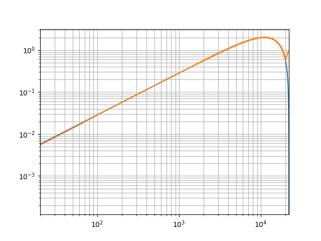

3. Tutorial: Measuring a transfer function (demonstrates the core functionalities)¶
This tutorial walks through a simple example of determining a transfer function with processing objects, that are connected with the functionalities of the Connectors package.
3.1. What’s a transfer function¶
A transfer function describes, how a linear, time-invariant system amplifies and delays the frequency components of its input signal. Examples of such systems are equalizers of HiFi systems, which allow to tweak the system’s sound by boosting or attenuating certain frequency regions. Or radio tuners, which supress all frequencies except for the one of the channel, that shall be received. The reflections and reverberations of a concert hall, which a listener experiences when attending an event there, can also be described by a transfer function.
The transfer function of a system can be measured by sending a known input signal into the system and recording its response. After that, the spectrum of this response has to be divided by the spectrum of the input signal. Think of this as of compensating for a bias of the input signal, which might excite certain frequencies at a higher level than others. If this is the case, the recorded response will also have an exaggerated amount of these frequency components, which is not due them being boosted by the system, but due to a biased excitation. The divison normalizes the response by attenuating the frequency components, that had been exaggerated in the excitation signal.
Of course, the exctiation signal has to excite all frequencies, at which the system shall be modeled. Otherwise, the division will divide by zero and the resulting transfer function will be invalid at the non-excited frequencies.
- For more background on transfer functions, you can read the following Wikipedia articles (sorted in increasing order of theoretical complexity):
The following block diagram shows the computation steps for determining the transfer function of a system:
![digraph Measurement{
rankdir=LR;
generator -> system -> fft1 -> division -> plot;
generator -> fft2 -> division;
generator [label="Signal generator", shape=hexagon];
system [label="{|System|}", shape=record, color=red];
fft1 [label="FFT 1", shape=box, color=blue];
division [label="÷", shape=box, color=blue];
fft2 [label="FFT 2", shape=box, color=blue];
plot [label="Plot", shape=parallelogram];
{rank=same; fft1, fft2};
}](_images/graphviz-c96a534effa3c700593e3bc12c1b148d0575399d.png)
First, the excitation signal is created in Signal generator. In this tutorial, a linear sweep is used, which is a sine wave, which continuously increases its frequency over time, thus exciting all the frequencies at which the system shall be modeled. The sweep is used, because it is mathematically well defined, easy to implement and for demonstrating what will happen, if the frequency range of the excitation signal is limited. For the purpose of measuring a transfer function, other signals such as noise or maximum length sequences are also suitable.
The generated excitation signal is fed into the System. The spectrum of the system’s response is computed by transforming the response to the frequency domain with the help of the fast fourier transform in block FFT 1. Meanwhile, the spectrum of the excitation signal is computed by the block FFT 2. The resulting transfer function is computed by the division ÷ and displayed by the Plot.
3.2. Define a system, of which the tranfer function shall be measured¶
For reducing the lines of code for this tutorial, the system, that shall be analyzed by measuring its transfer function, is modeled with its impulse response. The impulse response is mathematically connected to the transfer function by the (inverse) fourier transform.
![digraph ImpulseResponse{
rankdir=LR;
ir -> fft -> tf -> ifft -> ir;
ir [label="impulse response", shape=hexagon];
fft [label="Fourier transform", shape=box];
tf [label="transfer function", shape=hexagon];
ifft [label="inverse Fourier transform", shape=box];
{rank=same; fft, ifft};
}](_images/graphviz-b780df403924a724bcc5a12c588d8c37acb505c3.png)
The following code implements a class for defining a linear time-invariant system. It requires an impulse response as constructor parameter, in order to define the system’s behavior. Furthermore it has a setter and a getter method for passing the excitation signal and retrieving the response.
class LinearSystem:
def __init__(self, impulse_response):
self.__impulse_response = impulse_response
self.__input = None
@connectors.Input("get_output")
def set_input(self, signal):
self.__input = signal
@connectors.Output()
def get_output(self):
return numpy.convolve(self.__input, self.__impulse_response, mode="full")[0:len(self.__input)]
The setter method set_input() is decorated to become an input connector, so that the output of the generator of the excitation signal can be connected to it.
Note that the name of the getter method get_output() is passed as a parameter to the input decorator.
This models the dependency of the getter’s return value on whether the setter has been called.
So whenever a new value is passed to the setter, the getter is notified, that it can produce a new result.
The getter method get_output() is decorated to become an output connector.
Note that this is the method, that actually does the expensive computation, while the setter only stores the received parameter.
This is a recommended practice when using the Connectors package, since the lazy execution and the caching capability of the output connectors can avoid, that these computations are performed unnecessarily.
3.3. Generate a measurement signal¶
Using the Connectors package with the generator class for the linear sweep is straight forward. In production code, all parameters, that can be passed to the constructor, should have a setter method, that is decorated to become an input connector. This has been omitted in this tutorial to keep the code short.
class SweepGenerator:
def __init__(self, start_frequency=20.0, stop_frequency=20000.0, length=2 ** 16):
self.__start_frequency = start_frequency
self.__stop_frequency = stop_frequency
self.__length = length
@connectors.Input("get_sweep")
def set_start_frequency(self, frequency):
self.__start_frequency = frequency
@connectors.Output()
def get_sweep(self):
f0 = self.__start_frequency
fT = self.__stop_frequency
T = self.__length / sampling_rate # the duration of the signal
t = numpy.arange(0.0, T, 1.0 / sampling_rate) # an array with the time samples
k = (fT - f0) / T # the "sweep rate"
return numpy.sin(2.0 * math.pi * f0 * t + math.pi * k * (t ** 2))
3.4. Compute the fourier transform¶
Decorating the methods of the class for the fourier transform works just like in the previous classes.
But the deletion of the input signal in the getter method get_spectrum() is noteworthy.
class FourierTransform:
def __init__(self, signal=None):
self.__signal = signal
@connectors.Input("get_spectrum")
def set_signal(self, signal):
self.__signal = signal
@connectors.Output()
def get_spectrum(self):
spectrum = numpy.fft.rfft(self.__signal)
self.__signal = None
return spectrum
Since the input signal is the only parameter for the fourier transform, the reference to it can be deleted after computing the output spectrum, as long as the caching of the output spectrum is enabled. The only situation, in which the cached spectrum becomes invalid and the output spectrum has to be recomputed, is when a new input signal is provided. So the old input signal is no longer needed after the computation.
In this example, the input signals for the two fourier transform classes would not be garbage collected, because they are cached in the outputs of the signal generator and the system under test. The memory requirements for running the script of this tutorial are moderate, so that the code has not been optimized for minimal memory consumption by deactivating caching and other measures. In some practical situations, these optimizations can reduce the memory consumption significantly.
3.5. Compute the transfer function¶
The class, that computes the transfer function by dividing the response spectrum by the excitation spectrum is again straight forward.
The only difference, that has not been shown in previous classes is, that an output connector depends on the parameters of multiple input connectors.
Each of these receives the name of the dependent output connector as a parameter for the Input decorator.
class TransferFunction:
def __init__(self, excitation=None, response=None):
self.__excitation = excitation
self.__response = response
@connectors.Input("get_transfer_function")
def set_excitation(self, signal):
self.__excitation = signal
@connectors.Input("get_transfer_function")
def set_response(self, signal):
self.__response = signal
@connectors.Output()
def get_transfer_function(self):
return numpy.divide(self.__response, self.__excitation)
3.6. Plot the transfer function¶
For the sake of simplicity, the plotting class in this tutorial only plots the magnitude of the transfer function.
Plotting the phase aswell, requires some additional functionalities of matplotlib, which is not in the scope of this tutorial.
The plotting class demonstrates the use of a multi-input connector for plotting multiple spectrums in one plot.
class MagnitudePlot:
def __init__(self):
self.__spectrums = connectors.MultiInputData()
@connectors.MultiInput("show")
def add_spectrum(self, spectrum):
return self.__spectrums.add(spectrum)
@add_spectrum.remove
def remove_spectrum(self, data_id):
del self.__spectrums[data_id]
@add_spectrum.replace
def replace_spectrum(self, data_id, spectrum):
self.__spectrums[data_id] = spectrum
@connectors.Output(parallelization=connectors.Parallelization.SEQUENTIAL)
def show(self):
for d in self.__spectrums:
x_axis_data = numpy.linspace(0.0, sampling_rate / 2.0, len(self.__spectrums[d]))
magnitude = numpy.abs(self.__spectrums[d])
pyplot.plot(x_axis_data, magnitude)
pyplot.loglog()
pyplot.xlim(20.0, sampling_rate / 2.0)
pyplot.grid(b=True, which="both")
pyplot.show()
Decorating the add_spectrum() method to become a multi-input connector is similar to the regular input connectors.
It also gets the name of the dependent output connectors passed as a parameter.
It is improtant though, that the method of multi-input returns an ID, with which the added dataset can be identified, when it shall be deleted or replaced.
Specifying a remove-method for a multi-input connector is mandatory.
This method is called whenever a dataset is removed, for example by disconnecting an output connector from the multi-input.
Notice that the remove-method remove_spectrum() is decorated with a method of the multi-input connector instead of an object from the Connectors package.
The replace-method replace_spectrum() of the multi-input connector is called, whenever an added spectrum shall be replaced by an updated version.
If none is specified, the replacement will be done by removing the old dataset and adding a new one, which does not preserve the order, in which the datasets have been added.
The spectrums, that are added through the add_spectrum() method are managed by a MultiInputData container.
This is basically an OrderedDict, that has been extended with an add() method, which adds the given dataset to the dictionary and returns a unique ID, under which the dataset has been stored.
The show() method is decorated to become an output connector, despite the fact that it does not return any result value.
Nevertheless, this allows to model, that showing the plot depends on the input data for the plot.
Note that the automated parallelization is disabled for this method by passing the flag SEQUENTIAL as the parallelization parameter for the output decorator.
By default, the Connectors package parallelizes independent computations in separate threads.
Process-based parallelization is also available, but this requires the data, that is passed through the connections, to be pickle-able and the pickling introduces additional overhead.
GUI functionalities often require, that all updates of the GUI are done by the same thread, which is why this example script will raise errors if the parallelization of the show() method is not disabled.
3.7. Instantiating the processing network¶
Now that all the necessary processing classes are implemented, the network for measuring and computing the transfer function can be set up.
First the linear, time-invariant system is instantiated. The impulse response is chosen to have a rolloff at both high and low frequencies.
impulse_response = numpy.zeros(2 ** 16)
impulse_response[0:3] = (-1.0, 0.0, 1.0)
system = LinearSystem(impulse_response)
After that, the sweep generator is created and connected to the system, that shall be measured.
The connection is established by calling the connect() method of the output connector get_sweep() with the input connector set_input() from the system.
The connect() method returns the instance, to which the connector belongs.
This way, the instantiation of a processing class and the connection of one of its connectors can be done in one line, like this example shows.
sweep = SweepGenerator().get_sweep.connect(system.set_input)
Instantiating the fourier transform classes is straight forward now.
Note, that this time, the connect() method of the input connectors are called with an output connector as a parameter, while it is the other way around, during the instantiation of the sweep generator.
Both ways are possible.
excitation_fft = FourierTransform().set_signal.connect(sweep.get_sweep)
response_fft = FourierTransform().set_signal.connect(system.get_output)
The class for dividing the two spectrums is created without connecting any of its connectors in the same line. Since two of its connectors have to be connected, the connections are established in separate but similar lines, which improves the readability of the code.
transfer_function = TransferFunction()
transfer_function.set_excitation.connect(excitation_fft.get_spectrum)
transfer_function.set_response.connect(response_fft.get_spectrum)
Finally, the plot is created and shown. In addition to the measured transfer function, the plot also shows the spectrum of the system’s impulse response, so it can be seen how the measured transfer function deviates from the expected spectrum.
![digraph Plot{
rankdir=LR;
ir -> system;
ir -> fft0 -> plot;
generator -> system -> fft1 -> division -> plot;
generator -> fft2 -> division;
ir [label="Impulse response", shape=octagon, color=green];
fft0 [label="FFT", shape=box, color=green];
generator [label="Signal generator", shape=hexagon];
system [label="{|System|}", shape=record, color=red];
fft1 [label="FFT", shape=box, color=blue];
division [label="÷", shape=box, color=blue];
fft2 [label="FFT", shape=box, color=blue];
plot [label="Plot", shape=parallelogram];
{rank=same; ir, system};
{rank=same; fft0, fft1, fft2};
}](_images/graphviz-94151810a6ede50bb48103ad29501e0cd165bb5e.png)
Adding the measured transfer function is done through connections, just like the other connections, that have been established before. It is noteworthy though, how the spectrum of the impulse response is added by simply calling the respective methods and without relying on the functionality of the Connectors package. This shows, that the decorated methods can still be used as normal methods, even when they are extended with the functionality of a connector.
magnitude_plot = MagnitudePlot()
magnitude_plot.add_spectrum(FourierTransform(impulse_response).get_spectrum())
transfer_function.get_transfer_function.connect(magnitude_plot.add_spectrum)
magnitude_plot.show()
This results in the following plot. The measured transfer function matches well with the spectrum of the original impulse response, but especially at low frequencies, there are slight deviations. Above 20kHz, the two measured frequency response becomes highly inaccurate, which is because the sweep has not excited these frequencies, so the computation of the transfer function becomes a division by zero.
To demonstrate the automated updating of data in a processing network, the start frequency of the sweep is changed and the plot is shown again.
sweep.set_start_frequency(1000.0)
magnitude_plot.show()
The following plot shows the effect of raising the start frequency of the sweep to a value in the plotted frequency range. Since the low frequencies are no longer properly excited, the measurement of the tranfer function is invalid here aswell.
3.8. The complete script¶
import math
import numpy
import connectors
from matplotlib import pyplot
sampling_rate = 44100.0
class LinearSystem:
def __init__(self, impulse_response):
self.__impulse_response = impulse_response
self.__input = None
@connectors.Input("get_output")
def set_input(self, signal):
self.__input = signal
@connectors.Output()
def get_output(self):
return numpy.convolve(self.__input, self.__impulse_response, mode="full")[0:len(self.__input)]
class SweepGenerator:
def __init__(self, start_frequency=20.0, stop_frequency=20000.0, length=2 ** 16):
self.__start_frequency = start_frequency
self.__stop_frequency = stop_frequency
self.__length = length
@connectors.Input("get_sweep")
def set_start_frequency(self, frequency):
self.__start_frequency = frequency
@connectors.Output()
def get_sweep(self):
f0 = self.__start_frequency
fT = self.__stop_frequency
T = self.__length / sampling_rate # the duration of the signal
t = numpy.arange(0.0, T, 1.0 / sampling_rate) # an array with the time samples
k = (fT - f0) / T # the "sweep rate"
return numpy.sin(2.0 * math.pi * f0 * t + math.pi * k * (t ** 2))
class FourierTransform:
def __init__(self, signal=None):
self.__signal = signal
@connectors.Input("get_spectrum")
def set_signal(self, signal):
self.__signal = signal
@connectors.Output()
def get_spectrum(self):
spectrum = numpy.fft.rfft(self.__signal)
self.__signal = None
return spectrum
class TransferFunction:
def __init__(self, excitation=None, response=None):
self.__excitation = excitation
self.__response = response
@connectors.Input("get_transfer_function")
def set_excitation(self, signal):
self.__excitation = signal
@connectors.Input("get_transfer_function")
def set_response(self, signal):
self.__response = signal
@connectors.Output()
def get_transfer_function(self):
return numpy.divide(self.__response, self.__excitation)
class MagnitudePlot:
def __init__(self):
self.__spectrums = connectors.MultiInputData()
@connectors.MultiInput("show")
def add_spectrum(self, spectrum):
return self.__spectrums.add(spectrum)
@add_spectrum.remove
def remove_spectrum(self, data_id):
del self.__spectrums[data_id]
@add_spectrum.replace
def replace_spectrum(self, data_id, spectrum):
self.__spectrums[data_id] = spectrum
@connectors.Output(parallelization=connectors.Parallelization.SEQUENTIAL)
def show(self):
for d in self.__spectrums:
x_axis_data = numpy.linspace(0.0, sampling_rate / 2.0, len(self.__spectrums[d]))
magnitude = numpy.abs(self.__spectrums[d])
pyplot.plot(x_axis_data, magnitude)
pyplot.loglog()
pyplot.xlim(20.0, sampling_rate / 2.0)
pyplot.grid(b=True, which="both")
pyplot.show()
if __name__ == "__main__":
impulse_response = numpy.zeros(2 ** 16)
impulse_response[0:3] = (-1.0, 0.0, 1.0)
system = LinearSystem(impulse_response)
sweep = SweepGenerator().get_sweep.connect(system.set_input)
excitation_fft = FourierTransform().set_signal.connect(sweep.get_sweep)
response_fft = FourierTransform().set_signal.connect(system.get_output)
transfer_function = TransferFunction()
transfer_function.set_excitation.connect(excitation_fft.get_spectrum)
transfer_function.set_response.connect(response_fft.get_spectrum)
magnitude_plot = MagnitudePlot()
magnitude_plot.add_spectrum(FourierTransform(impulse_response).get_spectrum())
transfer_function.get_transfer_function.connect(magnitude_plot.add_spectrum)
magnitude_plot.show()
sweep.set_start_frequency(1000.0)
magnitude_plot.show()